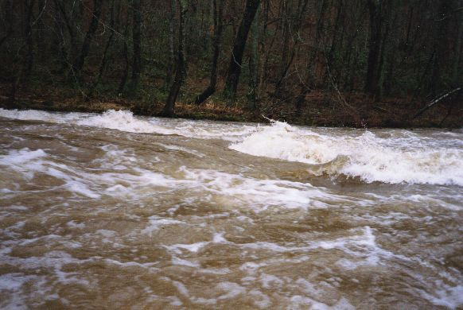
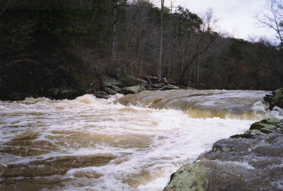

|  | There are some decent waves. At one of them the stench from nearby agriculture was almost overwhelming however. |
|  | Right at the confluence with Kirby, there are two low head dam type rapids. As you can see, this could get ugly if you were sideways. |